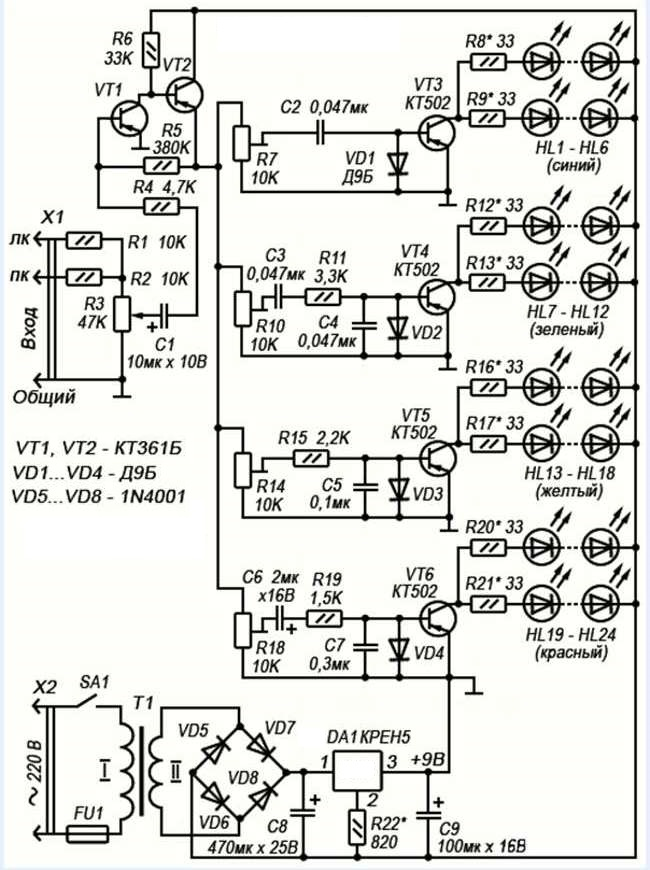
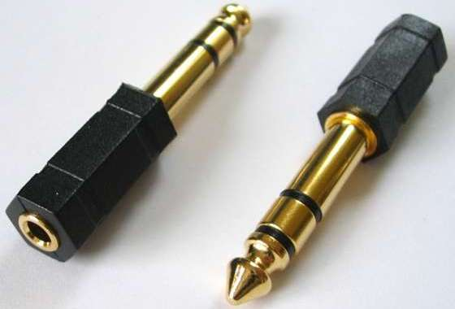

Четырехканальная цветомузыкальная установка на светодиодах

Рис. 1 - Схема четырехканальной цветомузыкальной установки на светодиодах
Таблица 1
| Обозначение | Наименование | Номинал | Примечание |
|---|---|---|---|
| С1 | Конденсатор электролитический | 10 мкФ / 10 В | |
| С2-C4 | Конденсатор | 0,047 мкФ / 16 В | |
| C5 | Конденсатор | 0,1 мкФ / 16 В | |
| С6 | Конденсатор электролитический | 2 мкФ / 16 В | |
| C7 | Конденсатор | 0,3 мкФ / 16 В | |
| С8 | Конденсатор электролитический | 470 мкФ / 25 В | |
| С9 | Конденсатор электролитический | 100 мкФ / 16 В | |
| DA1 | Стабилизатор интегральный | КР142ЕН5 | 7805 |
| HL1 - HL24 | Светодиод | АЛ307 | HL1 - HL6 - синий, HL7 - HL12 - зеленый HL13 - HL18 - желтый, HL19 - HL24 - красный |
| R1, R2 | Резистор постоянный | 10 кОм / 0,125-0,25 Вт | |
| R3 | Резистор переменный | 47 кОм | |
| R4 | Резистор постоянный | 4,7 кОм / 0,125-0,25 Вт | |
| R5 | Резистор постоянный | 380 кОм / 0,125-0,25 Вт | |
| R6 | Резистор постоянный | 33 кОм / 0,125-0,25 Вт | |
| R7,R10,R14,R18 | Резистор подстроечный | 10 кОм | |
| R8,R9,R12,R13, R16,R17,R20,R21 |
Резистор постоянный | 33 Ом / 0,125-0,25 Вт | |
| R11 | Резистор постоянный | 3,3 кОм / 0,125-0,25 Вт | |
| R15 | Резистор постоянный | 2,2 кОм / 0,125-0,25 Вт | |
| R19 | Резистор постоянный | 1,5 кОм / 0,125-0,25 Вт | |
| R22 | Резистор постоянный | 820 Ом / 0,125-0,25 Вт | |
| Т1 | Трансформатор | 220/13 В | С напряжением вторичной обмотки 12-14 В и током 1 А |
| VD1-VD4 | Диод | Д9Б | |
| VD5-VD8 | Диод | 1N4001 | Диодный мост КЦ405 или другой с максимальным выпрямленным током не менее 1 А |
| VT1, VT2 | Транзистор биполярный | КТ361Б | С любым буквенным индексом |
| VT3-VT6 | Транзистор биполярный | КТ502 | С любым буквенным индексом |
В качестве стабилизатора напряжения блока питания можно использовать стабилизатор 7805. Если применять стабилизатор 7809 (на 9 В), то из схемы нужно исключить резистор R22, а вместо него ставится перемычка, соединяющая минусовую шину и средний вывод.
Соединить цветомузыку с музыкальным центром, можно при помощи трехконтактного разъёма «джек» (рис. 2).

Рис. 2 - Разъём «джек»